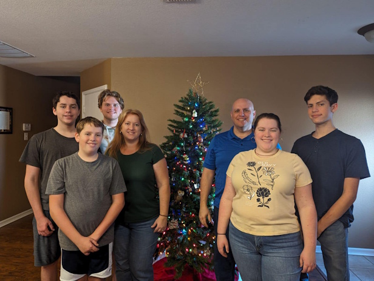

Justin Hutchens
I am Justin Hutchens. I will/have graduated high-school April 12th 2025. I will serve / have served a mission from May of 2025 to May 2027 to the Sendi Japan Mission. I was homeschooled for my enducation up until I began concurent enrollment at BYU-I. From ages 9 to 14, I studied piano, I eventualy switched to spend more time studying programming. I seek to enter a computer science or electrical engineering field in the future, though I do not currently know which I want more.